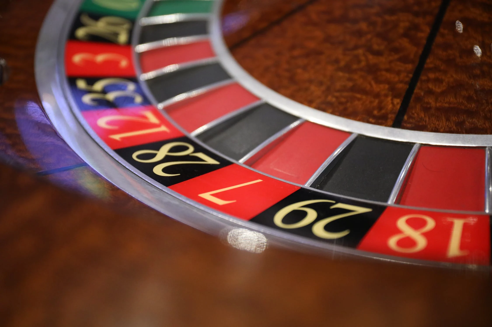

<template>
  <div class="MainContainer">
    <div class="TitleImg center">
      
    </div>
    <div class="single-wide">
      <h1>Where to Play Roulette on The Strip </h1>
      
      <p><b>Luxor</b> you’ll find 2 roulette tables waiting. The best of the bunch are two French tables featuring the European rules for a house edge of 1.35 percent (single zero). In exchange for those friendly odds, players must meet the $15 minimum bet on even money “outside” wagers. That’s a steep price to pay for many recreational gamblers, but it’s the standard for European roulette on The Strip. </p>
      <p><b>Cromwell </b>- A European single-zero wheel can be played for a $25 minimum. Rumors are flying around about a $5 Single zero table here. American double-zero wheels are also found spinning at the $5 and $10 price points. </p>
      <p><b>Bally's </b>made the cut for one simple reason – $3 limit roulette. The wheel is obviously of the double-zero variety, but that’s OK when you get to spin for the lowest limits found on The Strip </p>
      <h5>"In Vegas, I got into a long argument with the man at the roulette wheel over what I considered to be an odd number." </h5>
      <h6><i>Steven Wright</i></h6>
    </div>
  </div>

</template>
